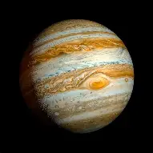

| Jupiter is the fifth planet from the Sun, and the largest in the Solar System. It is a gas giant with a mass nearly 2.5 times that of all the other planets in the Solar System combined and slightly less than one-thousandth the mass of the Sun. Its diameter is 11 times that of Earth and a tenth that of the Sun. Jupiter orbits the Sun at a distance of 5.20 AU (778.5 Gm), with an orbital period of 11.86 years. It is the third-brightest natural object in the Earth's night sky, after the Moon and Venus, and has been observed since prehistoric times. Its name derives from that of Jupiter, the chief deity of ancient Roman religion. |